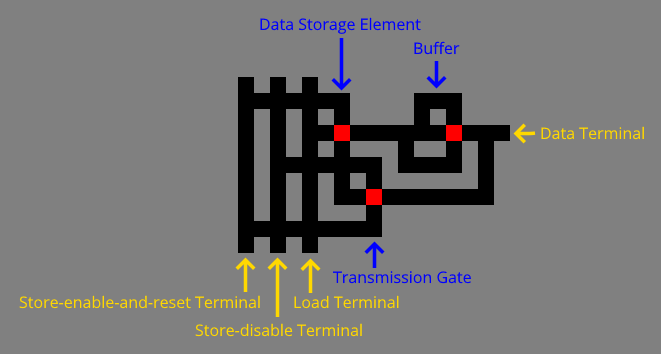
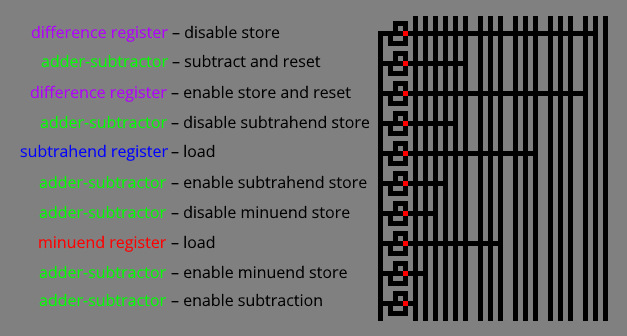
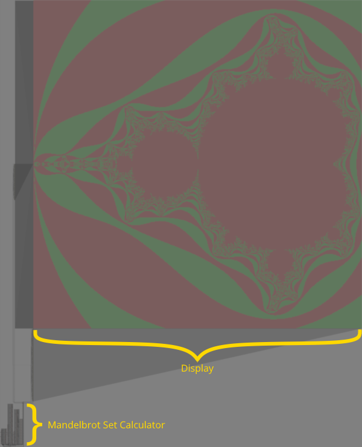
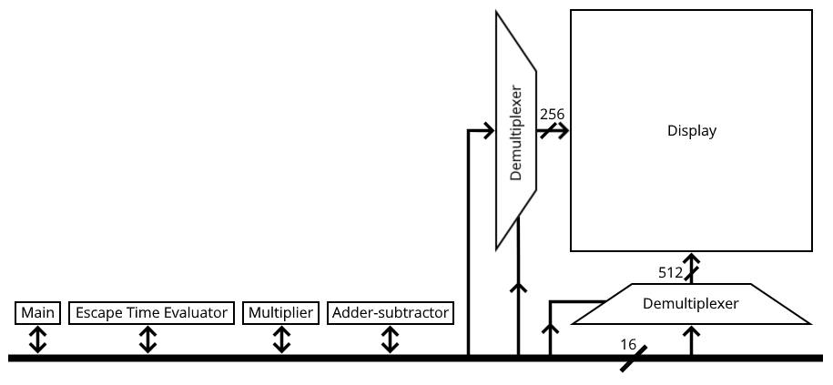
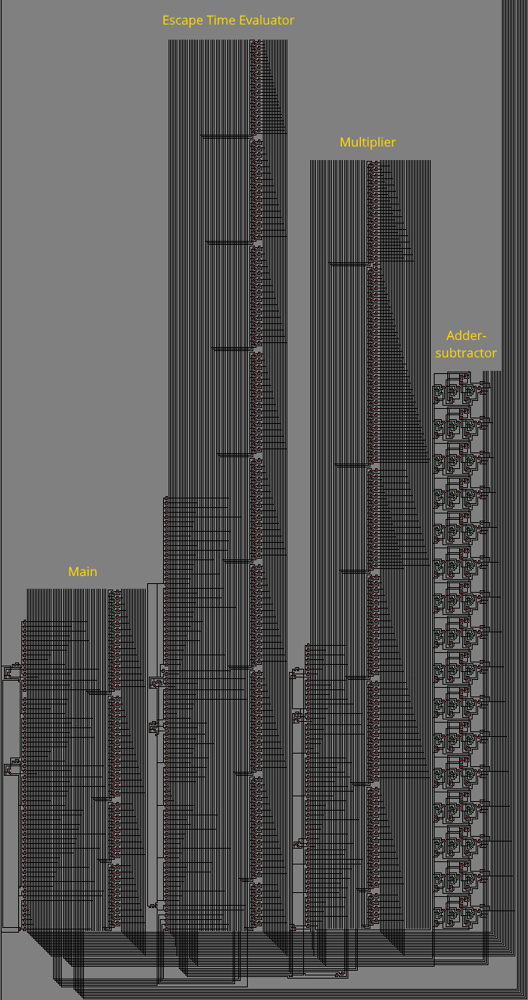
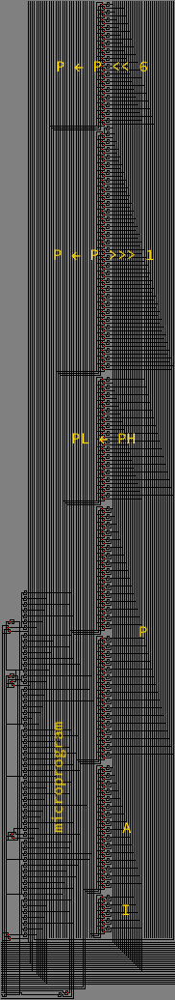
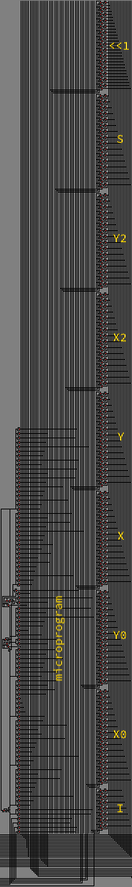
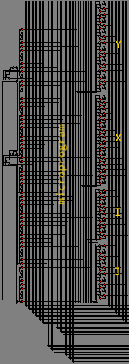

© 2023 meatfighter.com
This content is licensed under CC BY-SA 4.0


Turing’s Maze
Turing’s Maze is a discrete-event simulation of a mouse on a two-dimensional square lattice of black, gray, red, and green cells. As the mouse interacts with cells through a very simple set of rules, behaviors emerge particularly suited for emulating Boolean circuits. Consequently, any algorithm can be implemented as a maze traversed by the mouse.
This article describes the rules of Turing’s Maze. It explains how to build gates, combinational logic, and sequential logic. And it demonstrates the mouse’s ability to compute with an implementation of the Mandelbrot set algorithm.
Each simulation state consists of the mouse on a cell, facing a cardinal direction (north, east, south, or west). The mouse may change direction and its cell color according to rules described below. Then the mouse moves forward to an adjacent cell, transitioning the simulation to the next state.
The mouse can move to cells of any color except for gray, which act as the walls of the maze. Passages primarily consist of black cells. Red and green cells operate something like traffic lights.
The mouse enters a maze from a lone black cell in some column of the southernmost row. It exits to a lone black cell in some column of the northernmost row:
The mouse traverses the maze by following the right-hand rule. That is, from the start, it keeps its right hand (or paw) in contact with the wall to its right, and it follows the wall around corners as it advances. However, if it encounters a four-way intersection, it plows straight through:
If the mouse lands on a green cell while facing east or west, it proceeds as if the cell were black:
If the mouse lands on a red cell while facing east or west, it reverses direction:
If the mouse lands on a red or green cell while facing south, the cell changes to or remains as red, and the mouse turns north:
Finally, if the mouse lands on a red or green cell while facing north, the cell changes to or remains as green, and the mouse turns south:
The simulator repeatedly performs these steps until the mouse exits the maze:
The simulator may change the color of the tile the mouse is situated on and the mouse’s direction:
if tile = red then if direction = north then tile ← green end direction ← reverse(direction) else if tile = green then if direction = north then direction ← south else if direction = south then direction ← north tile ← red end end
The simulator inspects the tiles immediately left, in front of, and right of the mouse. It uses the table below, where 1 indicates a wall (a gray tile) and 0 indicates a passage (a nongray tile), to abide by the right-hand rule modified to ignore four-way intersections.
| Walls | Action |
|---|---|
| 000 | None (four-way intersection) |
| 001 | None (right branch ahead) |
| 010 | Turn 90° clockwise (take right branch) |
| 011 | Turn 90° counterclockwise (can only go left) |
| 100 | Turn 90° clockwise (take right branch) |
| 101 | None (straight passage) |
| 110 | Turn 90° clockwise (can only go right) |
| 111 | Reverse direction (dead end) |
The simulator moves the mouse forward to an adjacent tile.
In the circuits described below, the mouse propagates logic one as it travels. Paths of black tiles, separated by gray tiles, direct the mouse between components. They function as signal channels analogous to the wires of an electronic circuit. Four-way intersections act as non-connecting, crossing wires because the mouse disregards the right-hand rule when it encounters them.
Red and green tiles operate as switching elements. Red represents a switch turned off, a disconnected channel that denies east-west signal propagation. And green represents a switch turned on, a connected channel that permits east-way signal propagation.
The mouse turns a switch off by southwardly stepping onto a green tile. And it turns a switch on by northwardly stepping onto a red tile.
Since red and green tiles retain their states after the mouse steps away, they also serve as data storage elements. In the circuits below, red represents a stored logic zero, and green represents a stored logic one.
Note: It is possible to build inverted circuits, where the mouse propagates logic zero, or dual-rail circuits, where the mouse propagates logic zero or logic one depending on which of two paths the mouse takes.
Unlike traditional logic gates, logic gates implemented in Turing’s maze store input values. They are initialized to logic zeros.
When the mouse visits an input terminal—where “visit” means it enters and it subsequently returns from the terminal—it toggles a stored value to logic one. After setting the inputs in this way, the mouse enters an express-and-reset terminal, which evaluates the logical operation for the stored inputs. If the result is logic one, the mouse visits the output terminal, expressing the result to whatever is wired to the gate. Finally, the mouse resets the stored values to logic zeros, and it returns from the express-and-reset terminal.
To make this clear, the image below depicts an AND gate with the input terminals, the output terminal, and the express-and-reset terminal labeled.
When the mouse visits an input terminal, it switches a red tile to a green tile. When the mouse enters the express-and-reset terminal, it visits the output terminal only if the mouse switched both red tiles to green. Then it flips any green tiles back to red. And it returns from the express-and-reset terminal.
The following animated examples depict logic gates attached to test harnesses of the form:
Each harness uses red and green tiles to control which input terminals the mouse visits, and a red tile to capture the result of the logical operation for the given input values.
The XOR gate employs combinational logic. It consists of a NAND gate and an OR gate whose outputs feed into an AND gate. The XOR’s express-and-reset terminal directs the mouse to the NAND and OR gate’s express-and-reset terminals prior to the AND’s express-and-reset terminal, ensuring the logical operations are performed in the correct sequence:
Like XOR, XNOR employs combinational logic. It consists of a NOR gate and an AND gate whose outputs feed into an OR gate. As with XOR, XNOR’s express-and-reset terminal directs the mouse to evaluate the logical operations in the proper order:
A single red or green tile can function as a transmission gate:
The image below depicts part of the circuit that computes the Mandelbrot set. It shows stacks of transmission gates with common control lines that connect or disconnect devices to a bus.
A 1-to-2 demultiplexer steers the mouse from a data input terminal to one of two output terminals:
Here are test harnesses exercising all possible input values:
The Mandelbrot set circuit uses a 1-to-256 demultiplexer and a 1-to-512 demultiplexer constructed from binary trees of 1-to-2 demultiplexers.
As shown below, a 1-bit register combines a data storage element, a transmission gate, and a buffer. It provides store and load access through a single data terminal. The store-enable-and-reset terminal turns the transmission gate on, connecting the data terminal to the data storage element, and it resets the data storage element to red. The store-disable terminal turns the transmission gate off, disconnecting the data terminal from the data storage element. The load terminal expresses the data storage element to the data terminal through the buffer.

The Mandelbrot set circuit uses 16-bit registers, where each data terminal connects to the line of a bus shared by other registers and devices:
To load a value from the register, the mouse visits the load terminal. It expresses the data storage elements to the bus.
To store a value in the register:
The buffers prevent assertions of the shared bus lines from leaking to the load terminal through green data storage elements.
The register load and register store steps described above repeatedly appear in the Mandelbrot set circuit. For example, to subtract two registers, the mouse visits the control lines of the registers and a 16-bit adder-subtractor in a particular sequence:
There are no specific minuend, subtrahend, and difference registers. The names refer to any registers playing those roles during a subtraction.
The sequence above is an example of a microprogram. The Mandelbrot set circuit encodes microprograms like this:

The microprogram runs bottom-up. The mouse asserts control lines through buffers to avoid sharing conflicts.
For branching, a microprogram uses a circuit of the form:
After entering from the southern terminal, the mouse turns the transmission gate on, it resets the data storage element to red, and it visits a terminal that evaluates the branch condition. The mouse expresses the branch condition result through the transmission gate to the data storage element. Upon returning, the mouse turns the transmission gate off, and then it attempts to traverse the data storage element. If the stored branch condition is logic one, the mouse exits the north-east terminal. Otherwise, it exits the north-west terminal.
If a branch loops back to an earlier part of a microprogram, a diode installed along the return pathway ensures the mouse traverses the loop in the correct direction:
This project includes a simulator and an emulator written in Java. They load an image of a Turing’s maze, where each pixel represents a tile with these 24-bit RGB values:
| Tile | RGB |
|---|---|
| Black | 000000 |
| Gray | 808080 |
| Red | FF0000 |
| Green | 00FF00 |
The simulator runs the mouse from the entrance to the exit, and it saves an image of the final maze state.
The emulator does the same, but it executes much faster. Before it runs the mouse from the entrance to the exit, it positions and orients the mouse on each red and green tile, and in each cardinal direction. It runs a simulation for those configurations that obtains a list of tiles the mouse turns red and a list of the tiles the mouse turns green until the mouse arrives at a red or green tile facing east or west.
At run-time, the emulator uses that precomputed table to jump the mouse from a source red or green tile, while facing east or west, to a destination red or green tile, again facing east or west, with the expected tile color changes. If the mouse lands on a red tile, the emulator reverses its direction.
To download the source code and the compiled binary, clone this repository.
To run the simulator, navigate to the local repository directory, and execute the following command.
java -cp target/turings-maze.jar turingsmaze.Simulator -i [ input image ] -o [ output image ] ⮺
To run the emulator, navigate to the local repository directory, and execute the following command.
java -cp target/turings-maze.jar turingsmaze.Emulator -i [ input image ] -o [ output image ] ⮺
After running for three hours on a 5½-year-old desktop PC, the emulator completed this transformation:
Click on the images to view the full-resolution versions (10,149 × 12,540 pixels).
The maze contains circuits that calculate the Mandelbrot set and a display that makes it visible:

As revealed in the high-level diagram below, the Mandelbrot set calculator consists of an adder-subtractor, a multiplier, a point escape time evaluator, and a main device that iterates over the points of the region. Demultiplexers drive the display. And everything shares a 16-bit bus.

Here are the actual circuits for the components of the Mandelbrot set calculator:

The adder-subtractor performs addition and subtraction on 16-bit, two's complement numbers. Its conventional ripple carry design consists of cascaded full adder-subtractors that propagate carries or borrows from the least significant bit to the most significant bit. The carry/borrow-in is constant, and the carry/borrow-out is lost. The bus serves as the input and output interface.
The multiplier operates on 16-bit fixed-point numbers, where the leading six bits represent a signed, two's complement integer, and the remaining ten bits represent a fraction, permitting values in the range $[ −32, 31.9990234375 ]$. It contains three registers:
| Register | Description |
|---|---|
| I | 5-bit loop index |
| A | 16-bit multiplicand |
| P | 32-bit product accessible as high and low 16-bit registers, PH and PL, respectively |
The multiplier contains three devices that perform the following operations.
| Operation | Description |
|---|---|
| PL ← PH | Move PH into PL |
| P ← P >>> 1 | Unsigned right-shift P by 1 |
| P ← P << 6 | Left-shift P by 6 |
The multiplier’s registers, devices, and microprogram are labeled in the image below.

The microprogram implements the following algorithm for multiplicands x and y.
A ← x PH ← y if y15 then PH ← 0 − PH end PL ← PH I ← 0 PH ← 0 while true do if PL0 = 1 then PH ← PH + A end P ← P >>> 1 I ← I + 1 if I4 = 1 then break end end P ← P << 6 if y15 then PH ← 0 − PH end
At completion, PH contains the resultant product.
The escape time evaluator executes the Mandelbrot set escape time algorithm for a given point. It contains eight registers:
| Register | Description |
|---|---|
| I | 7-bit loop index |
| X0 | Evaluation point x-coordinate |
| Y0 | Evaluation point x-coordinate |
| X | Escaping point x-coordinate |
| Y | Escaping point y-coordinate |
| X2 | X squared |
| Y2 | Y squared |
| S | Sum of squares |
It also contains a device that left-shifts by 1.
The escape time evaluator's registers, shifter, and microprogram are labeled in the image below.

The microprogram implements the following algorithm for evaluation point $a + bi$.
X0 ← a Y0 ← b X ← X0 Y ← Y0 I ← 0 while true do Y2 ← Y * Y X2 ← X * X S ← 61440 + X2 + Y2 if S15 = 0 then break end I ← I + 1 if I6 = 1 then break end Y ← ((X * Y) << 1) + Y0 X ← X2 − Y2 + X0 end
The constant 61440 corresponds to fixed-point value −4.
At completion, register I contains the escape time. It maxes out at 64.
The main microprogram plots a 512×512 pixel region of the Mandelbrot set for points
$\{a+bi:a\in[-2.0,0.5],b\in[-1.25, 1.25]\}$
Since the set is horizontally symmetric within that region, the microprogram computes only the upper half. The display device reflects the computed region to produce the entire image.
The main microprogram employs four registers:
| Register | Description |
|---|---|
| J | 10-bit column index |
| I | 9-bit row index |
| X | Evaluation point x-coordinate |
| Y | Evaluation point y-coordinate |
Its components are labeled in the image below.

The main microprogram implements the following algorithm.
Y ← 64256 I ← 0 while true do X ← 63488 J ← 0 while true do plot(J, I, evalEscapeTime(X, Y)) J ← J + 1 if J9 = 1 then break end X ← X + 5 end I ← I + 1 if I8 = 1 then break end Y ← Y + 5 end
Constants 64256 and 63488 represent fixed-point values −1.25 and −2, respectively. The constant 5 corresponds to the fixed-point interval between evaluation points: $\dfrac{2.5}{512}=0.0048828125$.
© 2023 meatfighter.com |